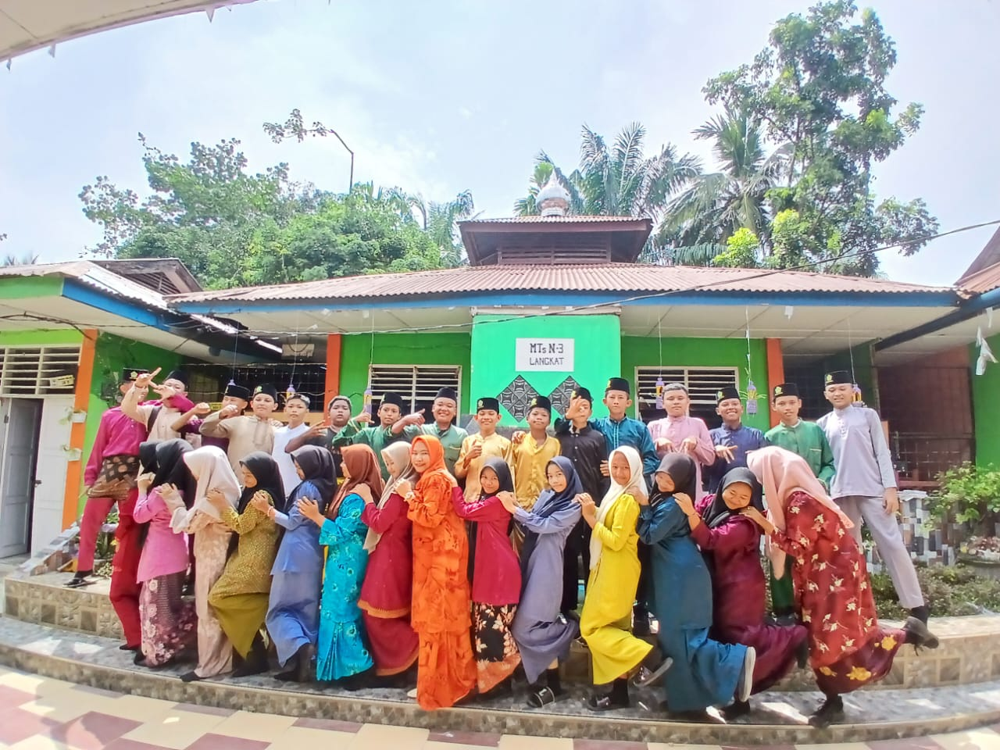
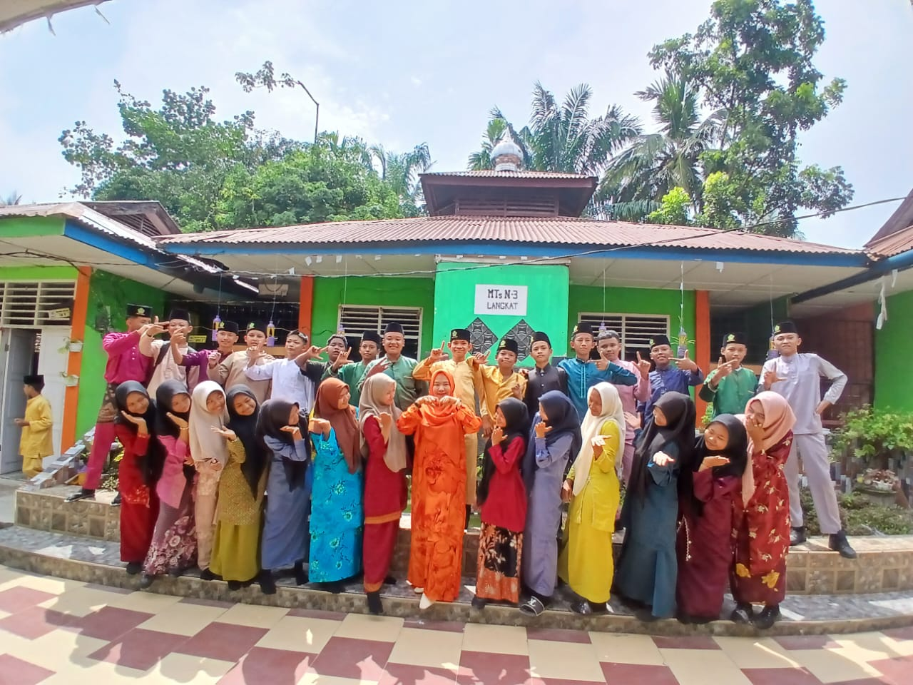
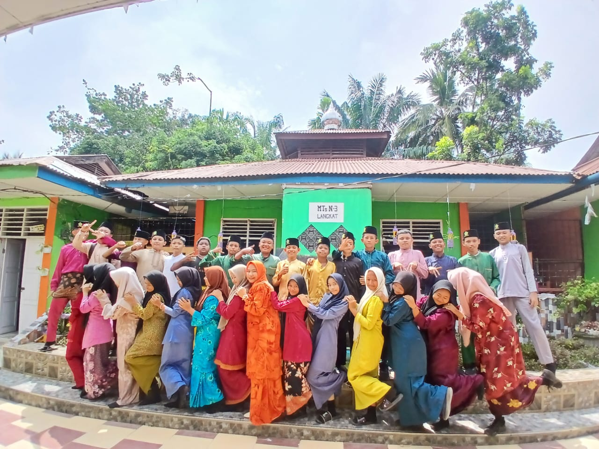
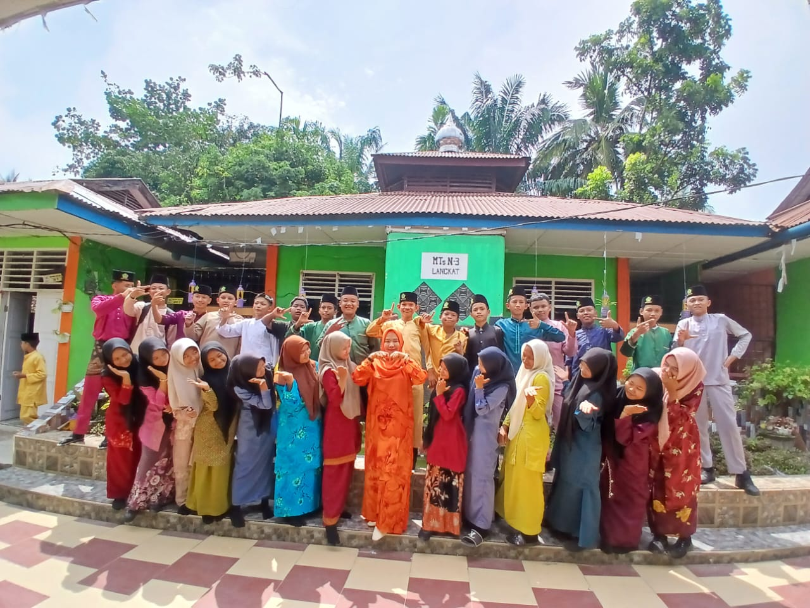

kelas IX-3 adalah kelas yang lumaya nyaman ketika untuk belajar seharian di kelas dan kelas IX-3 memiliki murid yang memiliki ke kreatifitas yang sangat tinggi dan kelas IX-3 murid nya baik',ramah,dll.
Dan kelas IX-3 murid nya sangat super duper aktif
 


